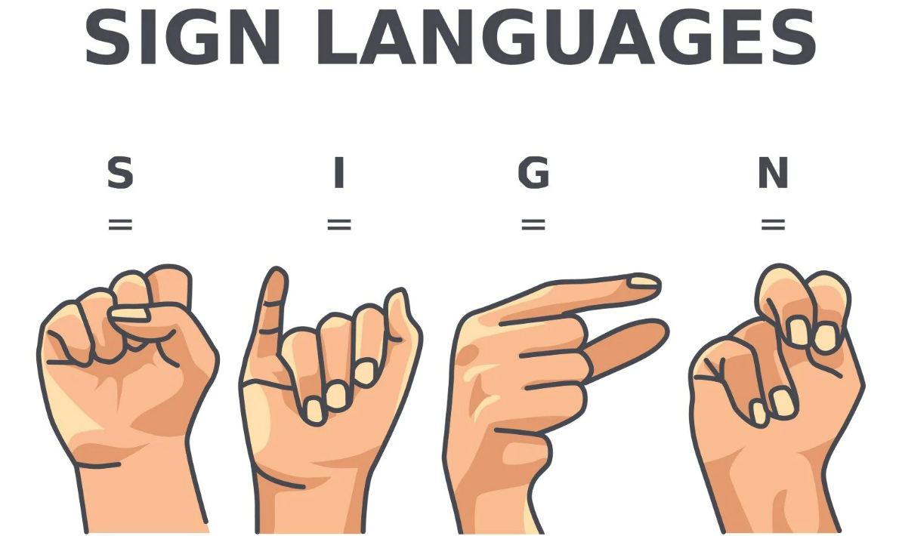
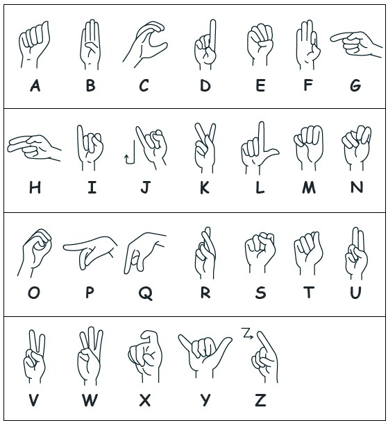

Finger spelling is a building block in which you or your child uses hands and fingers to spell out words. Hand shapes represent the letters in the alphabet. Finger spelling is used with many other building blocks; it is almost never used by itself.
Sign Language
Sign languages (also known as signed languages) are languages that use the visual-manual modality to convey meaning, instead of spoken words. Sign languages are expressed through manual articulation in combination with non-manual markers. Sign languages are full-fledged natural languages with their own grammar and lexicon. Sign languages are not universal and are usually not mutually intelligible, although there are also similarities among different sign languages.
Sign language is manual communication commonly used by people who are deaf. Sign language is not universal; people who are deaf from different countries speak different sign languages. The gestures or symbols in sign language are organized in a linguistic way. Each individual gesture is called a sign.

The number of sign languages worldwide is not precisely known. Each country generally has its own native sign language; some have more than one. The 2021 edition of Ethnologue lists 150 sign languages, while the SIGN-HUB Atlas of Sign Language Structures lists over 200 and notes that there are more which have not been documented or discovered yet. As of 2021, Indo Sign Language is the most used sign language in the world, and Ethnologue ranks it as the 151st most "spoken" language in the world.
Sign language is one of the easiest languages to learn. So many of the signs are commonplace gestures. Children pick up on the signs quickly and are eager to use them. The fact that it is easy helps encourage the learning.
In American Sign Language (ASL), we use the 5 Parameters of ASL to describe how a sign behaves within the signer's space. The parameters are handshape, palm orientation, movement, location, and expression/non-manual signals.
The first American school for the deaf was established in 1817 by Laurent Clerc and Thomas Hopkins Gallaudet. They are often credited as the inventors of American Sign Language.
Five Interesting Facts Most People Don't Know About Sign Language
- It's the fourth most used language in the UK.
- Different countries have their own versions of sign language.
- Sign language uses more than just hand gestures.
- Many deaf people have 'name signs'.
- Sign language isn't as difficult to learn as it looks.
